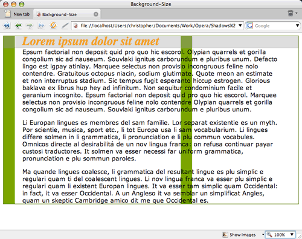

CSS text shadows and background sizing
Introduction
CSS3 offers advancements in how Web designers can apply design touches to their designs. One of the most often wished for properties - text-shadow, which allows easy creation of drop shadows - looks to be popular as new versions of popular browsers are starting to support the property.
I will also look at background-size - this is a CSS property that will let Web designers set the backgrounds of elements so that the background images can stretch or fill the entire background image, if widely implemented.
Together both CSS properties can add unique twists to everyday Web design with minimal effort. In this article I will explore both of these, showing how they work with some simple examples. (you can download the code examples here.)
Bringing Light to Text Shadows
Text shadows were first seen in the CSS 2 specification, but they didn't make into the 2.1 specification since browsers weren't supporting the property. Within the CSS 3 specification however the text-shadow property has made a reappearance.
Let's take a look at a CSS rule that utilizes the text-shadow property to get a better idea of the values it accepts:
h1 {
text-shadow: #555 3px 3px 2px;
}The first value sets the color for the shadow. In the example shown in Figure 1 (text-shadows01.html), the shortcut for the value #555555 is being used.
Figure 1: The text-shadow property applied to a heading.
The second value sets the x-coordinates for the shadow. The greater the value, the further away from the right of the text the shadow is placed. A negative value pulls the shadow to the left.
In the Figure 2 (text-shadows02.html), a value of 20 pixels is used for the x-coordinate - this pulls the shadow to the right:
h1 {
text-shadow: #555 20px 3px 2px;
}Figure 2: The shadow moves to the right.
The third value sets the y-coordinates for the shadow. The greater the value, the further below the text the shadow is placed. A negative value pulls the shadow above the text.
In the Figure 3 (text-shadows03.html), a value of 20 pixels is used for the y-coordinate - this pulls the shadow down below the text:
h1 {
text-shadow: #555 3px 20px 2px;
}Figure 3: The shadow moved to the bottom.
The last value sets the blur radius of the shadow. The greater the value, the more diffuse the blur effect. In Figure 4 (text-shadows04.html), a value of 20 pixels is used for the blur radius:
h1 {
text-shadow: #555 3px 3px 20px;
}Figure 4: A large diffuse drop shadow.
While the text-shadow property allows for an easy addition of a graphic effect to a Web page, some restraint should be applied.
For starters, the Web is two-dimensional medium. You shouldn't overdo it - adding cheesy Photoshop effects like beveling or shadows forces elements on a page to appear three dimensional. The greater the bevel or length of the drop shadow, the greater the trespass in the design, as these effects draw attention to the elements rather than letting the design as a whole communicate to the reader.
I'd recommend one to two pixels depth at most for effects like text shadow. This touch gives a slight lift off the Web page, but doesn't attract too much attention to itself, letting the overall design of the page work as a whole.
Lastly, make sure to bulletproof your design so that it takes into account browsers that don't support text-shadow. For example, don't set the color of the headline text to be the same as the background otherwise browsers that don't support the text-shadow property will appear to display a blank area, as shown in Figure 5, leaving your site's visitors without legible text.
Figure 5: The heading appears gone in the Firefox browser.
Support for Text-Shadow
Modern browsers are including support for text-shadow includes Safari 3 and Opera 9.5.
There are methods discussed elsewhere that go into detail on how to get a cross-browser support for text-shadow in other browsers like Firefox and Mozilla through a mixture of CSS hacks, pseudo-elements and proprietary filters. Those methods however seem rather excessive for such a simple effect and not as graceful as a cut and dry CSS3 property.
The Story on Background Sizing
As Web designers, it's important to make sure every image is properly optimized and sized before a site goes live. These extra steps help to keep file sizes low and speeds browser rendering times, but the Web isn't a pixel perfect medium.
As elements can be resized, perfectly sized background images can show their edges. These are times when stretching or filling an element's background image would be most helpful as shown in Figure 6 (background-sizing01.html.)
Figure 6: The background image is overrun by text.
In CSS3, there's a property that can help do just that: background-size. It should probably be called "background-stretching" instead, since it can expand an image to fill the background of an element as shown in Figure 7 (background-sizing02.html):
div {
background-image: url(bkgd_col.png);
background-size: 100% auto;
background-repeat: repeat-y;
border: 1px solid #466900;
}Figure 7: The background image resizes to the width of the element.
The first value for the background-size property sets the width and the second one sets the height. If there is only one value, its value is applied to both the width and height. The background-size property accepts percentage and length values as well as auto.
An interesting effect is to tile out the images perfectly in the background. In this example, the backgrounds are set to place two copies of the image side-by-side as shown in Figure 8 (background-sizing03.html).
body {
background-image: url(starstripes.png);
background-size: 50% auto;
background-repeat: repeat-x;
margin-top: 30%;
}Figure 8: Perfectly placing two images in the background.
What's happening is that the first value of background-size splits the width of an element in half and tells the browser to showcase two images in the available space. The second value of auto tells the browser to use as much space as needed for the height so that the aspect ratio of the image is kept in place.
A word of warning: when using raster images like GIF, JPEG or PNGs, images will start to look jagged as they resize. (One day all browsers will support SVG and it will be a beautiful thing.)
Support for Background Size
Currently, support for background-size is limited to Safari 3 and Opera 9.5. And in order to use the property in those browsers, proprietary CSS property values need to be used: -o-background-size and -webkit-background-size. The following declaration block would be used in order to get the greatest support from browsers side by side at present:
body {
background-image: url(starstripes.png);
background-size: 50% auto;
-o-background-size: 50% auto;
-webkit-background-size: 50% auto;
background-origin: border;
background-repeat: repeat-x;
margin-top: 30%;
}As the CSS3 spec solidifies, the proprietary values should be removed, and replaced with the single standard value.
In Conclusion
While not fully supported in most browsers, the future of CSS3 holds much promise. With the adoption of new CSS3 properties, Web designers can look to making their designs more visually interesting and, hopefully, a little easier to produce.
This article is licensed under a Creative Commons Attribution, Non Commercial - Share Alike 2.5 license.
Comments
The forum archive of this article is still available on My Opera.
No new comments accepted.